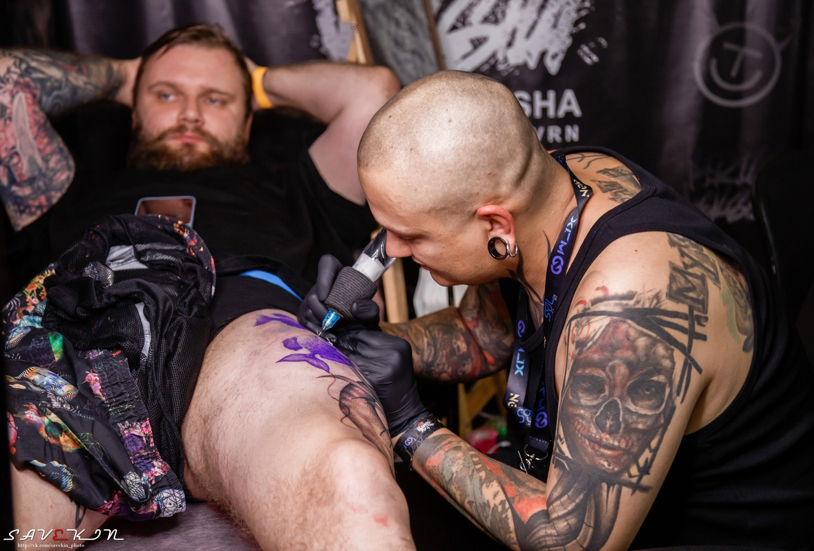
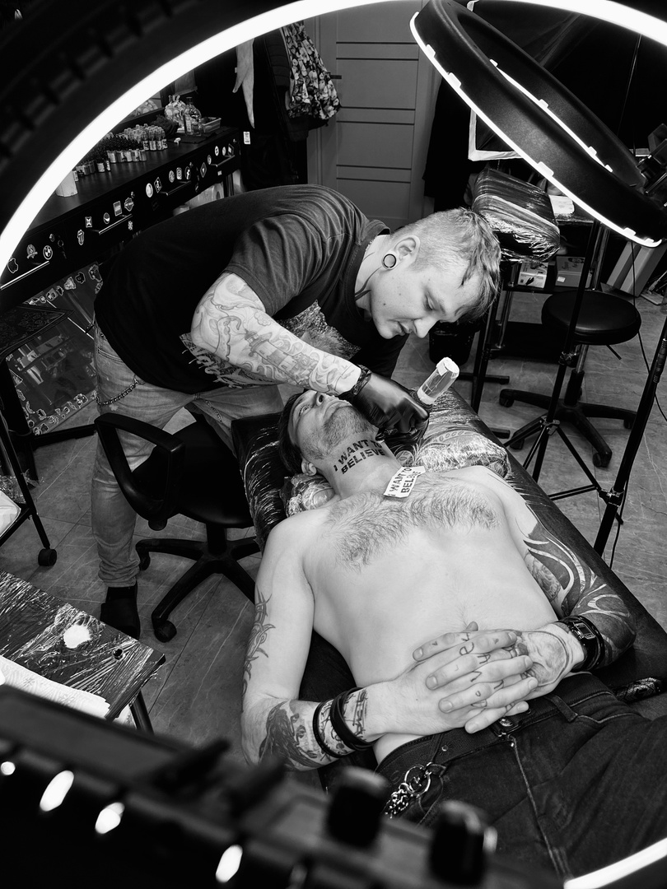
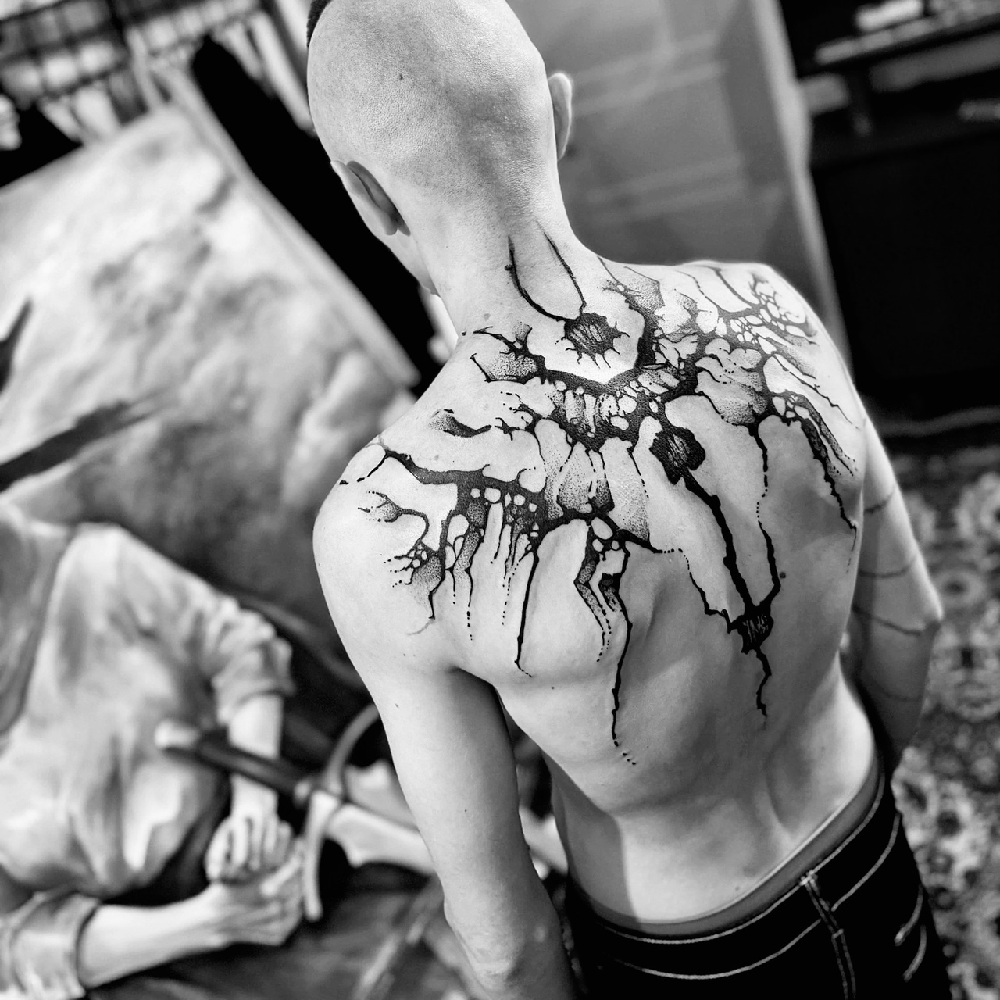
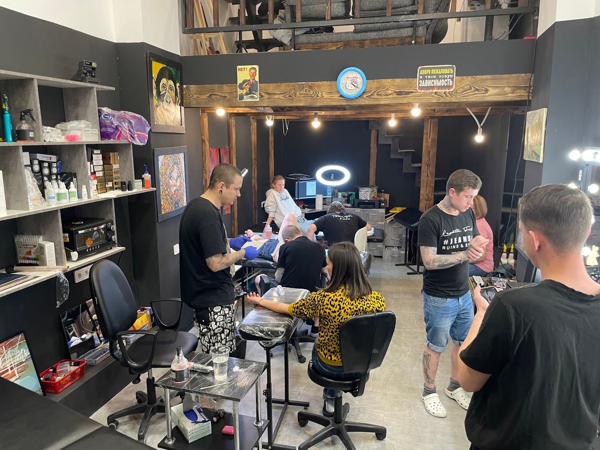

До курса доход составлял до 40 тысяч рублей в месяц, совмещал работу тату-мастером и банковским сотрудником. После прохождения курса и применения полученных знаний доходы выросли до 120-300 тысяч рублей ежемесячно, что позволило улучшить качество жизни, взять ипотеку и развивать собственный бизнес.
Кирилл Векша - тату-мастер из Воронежа поделился своими результатами обучения и успехами от курса ВК бабло.

— Расскажи, что было до курса, какой средний доход был в месяц? Сколько клиентов?
— До курса я жил и работал в Нововоронеже и совмещал работу татуировщика и работу в банке. У меня был не большой кабинет который я только начал обустраивать на базе салона красоты.
Доход был не большой до 30-40 тысяч в хорошие месяца.
Иногда я работал в Воронеже в тату студии друзей, они подгоняли клиентов.
— Какие сложности были во время обучения на нашем курсе? Насколько сложно было учиться? Почему остановился и на чем?

— Ну, в курсе настолько детально и доступно все рассказано, иногда в видео казалось, что сейчас постучат в дверь, погладят по голове и скажут, «не-не, не туда курсорчиком жми, вот так вот, легонько мышку вниз и кнопочку так шмяк и всё получится"
Сложности, ну основная – это заставить себя начать его проходить и найти место где тихо.
В курсе объясняют все в текстовом формате, дублируют в видео, в вопросах и ответах и даже в домашнем задании…в потоке помню кому-то не хватало этого и они записывали в тетрадку)
— Какие сейчас действия делаешь для привлечения клиентов? Как часто пишешь посты? Запускаешь ли рекламу?
— Посты пишу. Стараюсь часто, но не всегда, иногда пишу очень развернуто и интересно., но бывает поток работы такой, что хочется просто спать.

Рекламу запускаю. Но сейчас не сам, чаще прошу своего таргетолога, так как больше закциклен на самой работе.
Недавно открыл 4.0 ВК курс, увидел про Авито, создал там страницу, через день пришел первый клиент по обычному прайсу, закинул рекламу там, жду)
— А можешь поделиться, как изменилась жизнь, когда увеличился доход? Может что-то купил себе? Съездил в путешествие? Что-то смог сделать, чего раньше не мог позволить себе?
— Сильно ли изменилась жизнь, сложно сказать. Я просто смог позволить себе ЖИТЬ.
Взять ипотеку, завести второго ребенка и ни в чем себе не отказывать. У меня всегда айфон последней модели, купил крутой комп, максимально мощный из того, что можно было купить и раз в год я его обновляю.
Путешествовать не начал, так как спустя время открыл большую студию и со мной работают 12 человек. Это большой плюс я не один и что-то делаю)
Перестал экономить на одежде и обуви. Открыл студию свою. Красивуююю.

Ем вкусную еду, плачу ипотеку в другом городе и снимаю в Воронеже хорошую трех комнатную квартиру. Вообщем, жить, а не выживать – это приятно. Я с радостью погружаюсь в новые долги и планирую открыть маленький цех и делать футболки и другую одежду. Страха нет) Не боюсь, так как это тоже ремесло и курс снова поможет мне его продать.
— Все, остался только вопрос, сколько сейчас зарабатываешь? Сколько в среднем в месяц? Сколько клиентов? А вот примерно сколько за год было прошедший заработано?
— Сейчас от 120 до 300 тысяч чисто на своих услугах, не считая студии. Бывает, что без выходных работаю.
Но четкую бухгалтерию я так и не стал вести.
Но планировал начать) За прошлый год около 2 млн точно.
— Кирилл, спасибо тебе за обратную связь. Была рада общению)